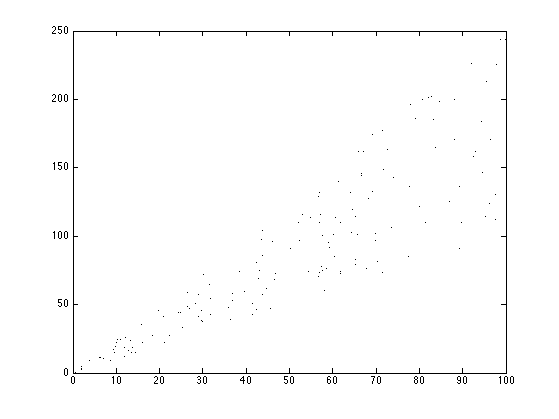

Plot of heteroscedastic linear regression
% This file is from pmtk3.googlecode.com setSeed(0); n = 150; X = sort(100*rand(n, 1)); y = X + (1:n)'.*rand(n, 1); % Here the 1:n are the monotonically increasing noise variances [styles, colors, symbols] = plotColors(); figure plot(X, y, '.k'); printPmtkFigure('linregHetero');